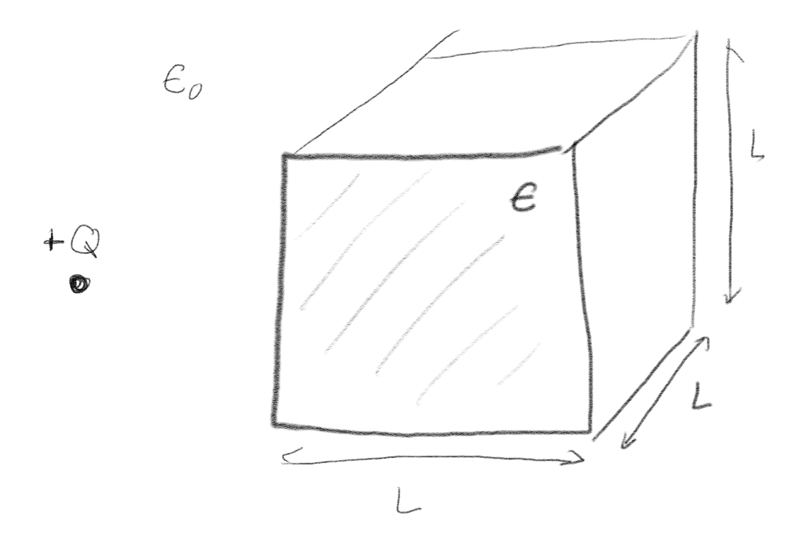
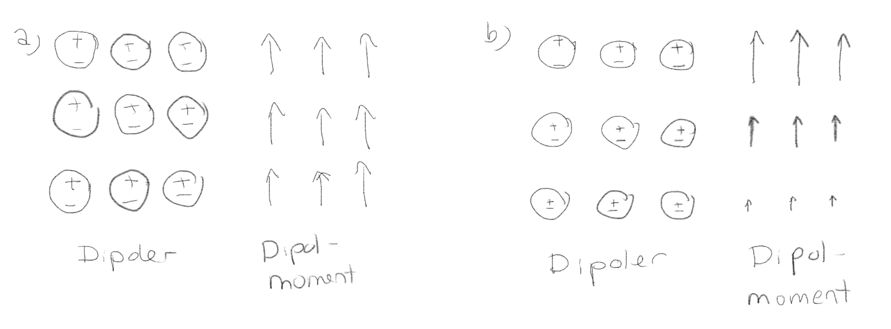
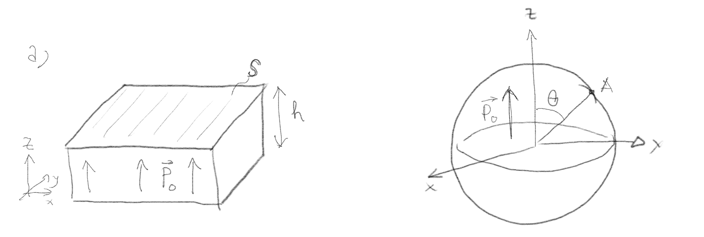
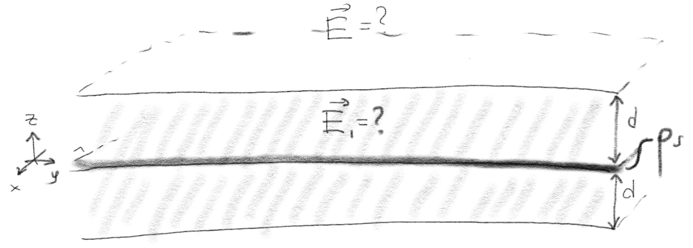
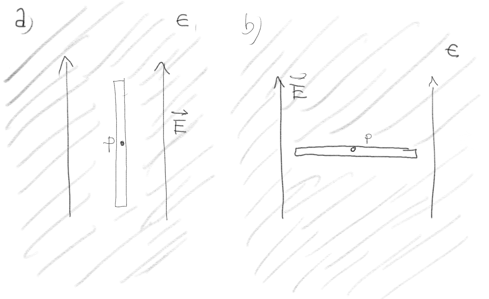

(Lærebok 4.1)
En kule med radius \( a \) har en uniform polarisasjon \( \vec{P}_0 = P_0 \z \).
a) Hva er det totale dipolmomentet til denne kulen?
\( 4 \pi a^3 \vec{P}_0/3 \)
Polarisasjonen er dipolmoment per volumenhet, så det totale dipolmomentet er \( \vec{P} v = \vec{P} 4 \pi a^3 /3 \).
En ladning \( +Q \) er nær en kube med sidekant \( L \) laget av et polariserbart materiale (et lineært dielektrium).

a) Hvilken vei virker netto elektrostatisk kraft på kuben fra ladningen?
Tiltrekkende (mot venstre)
Denne oppgaven svarer til det vi tidligere kalte en indusert dipol. De bundne ladningene i kuben vil føle det elektriske feltet fra den positive ladningen. Negative ladninger vil tiltrekkes og positive vil frastøtes. Det vil skape en polarisasjon mot høyre. Den tiltrekkende kraften fra de negative bundne ladningene som har kommet nærmere ladningen \( +Q \) vil være sterkere enn den frastøtende kraften fra de positive ladningene, slik at netto effekt blir at kuben tiltrekkes.
b) Hvordan vil svaret ditt endres om ladningen var negativ, \( -Q \)?
Det forandres ikke.
Argumentet blir det samme: Positive bundne ladninger i kuben vil tiltrekkes, mens negative vil frastøtes og netto effekt blir en tiltrekkende kraft.
(Lærebok 4.2)
Figuren illustrerer hvordan de bundne dipolene varierer gjennom et materiale. Hva er overflateladningstettheten og romladningstettheten av bundne ladninger på den øvre overflaten i de to tilfellene?

a) I tilfelle (a) er \( \rho_{s,b} = 0 \) eller er \( \rho_{s,b} \neq 0 \), er \( \rho_{v,b} = 0 \) eller er \( \rho_{v,b} \neq 0 \)?
\( \rho_{v,b} = 0, \rho_{s,b} \neq 0 \)
Vi leser \( \vec{P} \) av fra bilde og ser at \( \vec{P} \) er (tilnærmet) uniform. Vi finner \( \rho_{v,b} = - \nabla \cdot \vec{P} = 0 \), og \( \rho_{s,b} = \vec{P} \cdot \nhat > 0 \).
b) I tilfelle (a) er \( \rho_{s,b} = 0 \) eller er \( \rho_{s,b} \neq 0 \), er \( \rho_{v,b} = 0 \) eller er \( \rho_{v,b} \neq 0 \)?
\( \rho_{v,b} \neq 0, \rho_{s,b} \neq 0 \)
I dette tilfellet er ikke \( \vec{P} \) uniform, men øker oppover. Derfor er \( \nabla \cdot \vec{P} \neq 0 \). For \( \rho_{s,b} \) gjelder samme argument som i forrige oppgave, \( \rho_{s,b} \neq 0 \).
Figuren illustrerer to polariserte legemer, begge med polarisasjon \( \vec{P} = P_0 \z \).

a) I figur (a), hva er den bunden overflateladningstettheten på den nedre overflaten?
\( \rho_{s,b} = - P_0 \)
Vi finner denne fra \( \rho_{s,b} = \vec{P} \cdot \nhat \). For den nedre overflaten er \( \nhat = - \z \). Dermed er \( \rho_{s,b} = -P_0 \).
b) I figur (b), hva er den bundne overflateladningstettheten på overflaten av kulen?
\( P_0 \cos \theta \)
Vi finner den bundne overflateladningstettheten fra \( \rho_{s,b} = \vec{P} \cdot \nhat \). For kuleoverflaten er \( \nhat = \rhat = (\cos \phi \sin \theta, \sin \phi \sin \theta, \cos \theta) \) slik at \( \vec{P} \cdot \nhat = P_0 \cos \theta \).
c) I figur (b), hva er den bundne volumladningstettheten i kulen?
\( 0 \)
Vi finner den budne volumladningstettheten fra \( \rho_{v,b} = - \nabla \cdot \vec{P} = 0 \)
(Lærebok 4.3.0-4.3.3)
En dielektrisk stav har fått plassert inn (dopet med) en gitt romlig ladningsfordeling \( \rho \).
a) Når vi skal beregne \( \vec{D} \) i denne staven, hvordan vil du behandle ladningsfordelingen \( \rho \)?
Som frie ladninger
Dette er frie ladninger som ikke har noe med den lokale forskyvningen av bundne ladninger. Ladningsfordelingen \( \rho \) vil være opphav til et elektrisk felt, som igjen vil føre til en polarisasjon av det dielektriske materialet, som vil føre til en fordeling av bundne ladninger.
Forskyvningsfeltet \( \vec{D} \) er definert som \( \vec{D} = \epsilon_0 \vec{E} + \vec{P} \). Hvis du plasserer et dielektrisk materiale i et ytre elektrisk felt, \( \vec{E}_e \), vil det polariseres, og det vil oppstå et nytt indusert elektrisk felt fra forskyvningen av de bundne ladningene, \( \vec{E}_p \). Disse feltene vil superponeres, slik at det oppstart et totalt elektrisk felt, \( \vec{E}_t \).
a) Hvilket av disse tre feltene er det som inngår i formelen for \( \vec{D} \)?ng av bundne ladninger.
\( \vec{E}_t \)
Den lokale polarisasjonen er avhengig av det totale (netto) elektrisk felt i materialet. Det er derfor \( \vec{E}_t \) som inngår i definisjonen av \( \vec{D} \).
En punktladning \( +Q \) er plassert i sentrum av en dielektrisk kule med radius \( a \). Det er ingen andre ladninger til stede.
a) Hva er \( |\vec{D}(r)| \)?
\( |\vec{D}(r)| = \frac{Q}{4 \pi r^2} \)
Vi antar at \( \vec{D} \) har samme symmetri som \( \vec{E} \) slik at \( \vec{D} = D_r\rhat \). Vi anvender Gauss' lov på en Gaussflate med radius \( r \). Da er $$ \begin{equation} \oint_S \vec{D} \cdot\d \vec{S} = D_r \oint_S \d S = D_r 4 \pi r^2 = Q \quad \Rightarrow \quad D=\frac{Q}{4 \pi r^2} \; . \tag{5} \end{equation} $$
(Lærebok 4.3.3)
(Lærebok 4.3.4)
Figuren viser et uendelig stort plan med en flateladningstetthet \( \rho_s \). Planet ligger mellom to lineært dieletriske plater med dielektrisksitetskonstant \( \epsilon \) som også er uendelige, men med en endelig tykkelse \( d \).

Anta først at det ladete planet er alene i vakuum, uten de dielektriske platene.
a) Vis at delektriske feltet over platen er \( \vec{E}_0 = \rho_s/(2 \epsilon_0) \z \).
La oss nå anta at de dielektriske platene ligger over og under planet som vist i figuren.
b) Hva blir nå det elektriske feltet \( \vec{E}_1 \) i et punkt inne i det dielektriske materialet?
\( \vec{E}_1 = \frac{\rho_s}{2 \epsilon} \z \)
c) Hva blir nå det elektriske feltet \( \vec{E}_2 \) i et punkt over det dielektriske materialet?
\( \vec{E}_2 = \frac{\rho_s}{2 \epsilon_0} \z \)
d) Hva blir den bundne overflateladningstettheten på oversiden av den dielektriske platen.
\( \rho_{s,b} = \frac{\epsilon- \epsilon_0}{\epsilon} \frac{\rho_s}{2} \)
(Lærebok 4.4)
Figuren viser et dielektrisk materiale med permittivitet \( \epsilon \) med et elektrisk felt \( \vec{E} \). Materialet har et hull som vist i figuren. Det er ingen frie ladninger i det dielektriske materialet.

a) Hva er det elektriske feltet i punktet \( P \) umiddeltbart innenfor hullet i figur (a)?
\( \vec{E}_P = \vec{E} \)
Vi vet at tangential-komponenten av det elektriske feltet er kontinuerlig i overgangen fra det dielektriske materialet til hullet. Det betyr at umiddeltbar innenfor hullet er \( E_{1t} = E_{2t} \). Det elektriske feltet i punktet \( P \) er derfor det samme som i det dielektriske materialet.
b) Hva er det elektriske feltet i punktet \( P \) umiddeltbart innenfor hullet i figur (b)?
\( \vec{E}_P = \frac{\epsilon}{\epsilon_0} \vec{E} \)
Vi vet at normal-komponenten av \( \vec{D} \)-feltet er \( D_{1n}-D_{2n} = \rho_{s} \). Det er ingen frie overflateladninger, slik at normalkomponenten av \( \vec{D} \) er kontinuerlig i overgangen. I punktet \( P \) er derfor \( \vec{D} = \epsilon \vec{E} \) som er den samme som i det dielektriske materialet. Det betyr at det elektriske feltet i \( P \) er \( \vec{E}_P = \vec{D}/\epsilon_0 \) = \frac{\epsilon}{\epsilon_0}\vec{E}$ siden den dielektriske konstanten er \( \epsilon_0 \) i hulrommet.